May 8-12, 2023: Quantum Computing, Quantum Machine Learning and Quantum Information Theories
Morten Hjorth-Jensen [1, 2]
[1] Department of Physics, University of Oslo
[2] Department of Physics and Astronomy and Facility for Rare Isotope Beams, Michigan State University
May 8-12
- Quantum Fourier transforms (QFT)
- Quantum phase estimation (QPE) and computation of eigenvalues
- Discussion of project
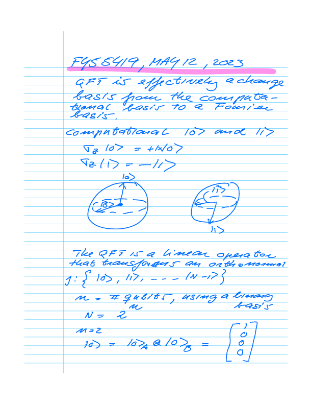
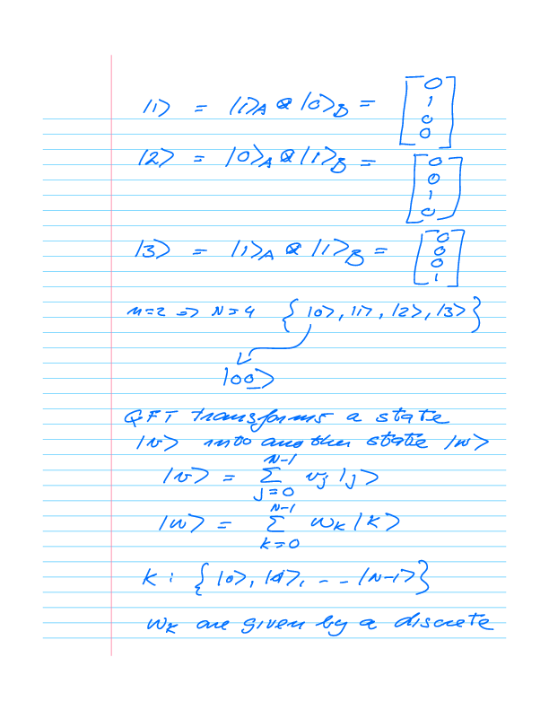
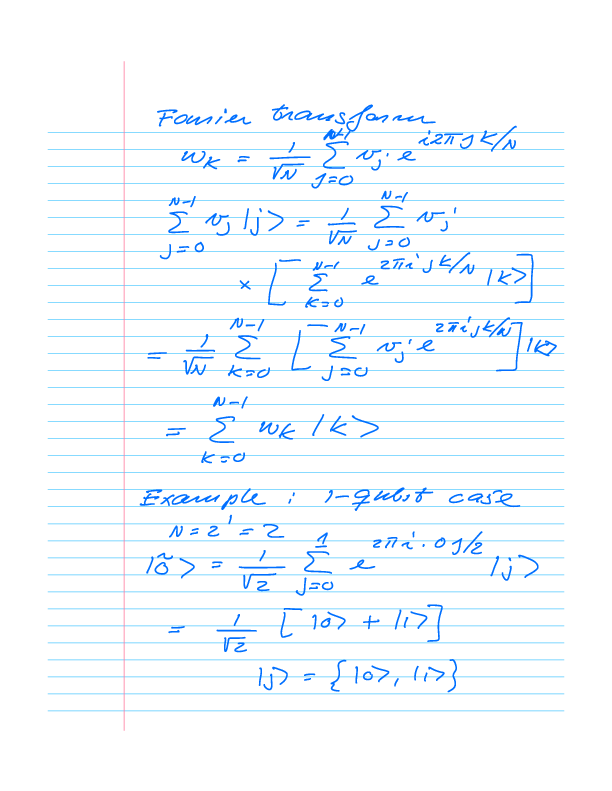
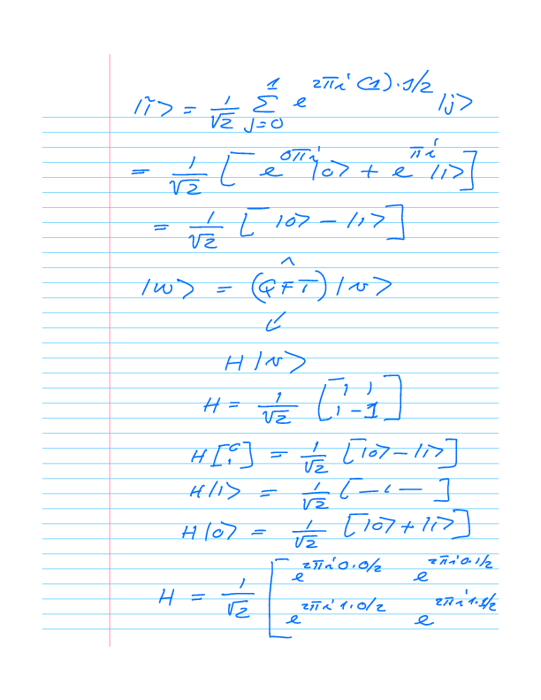
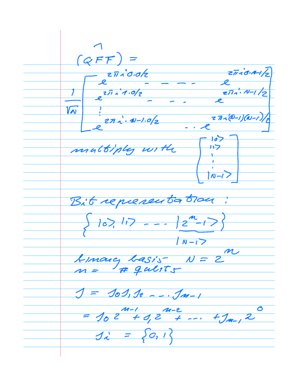
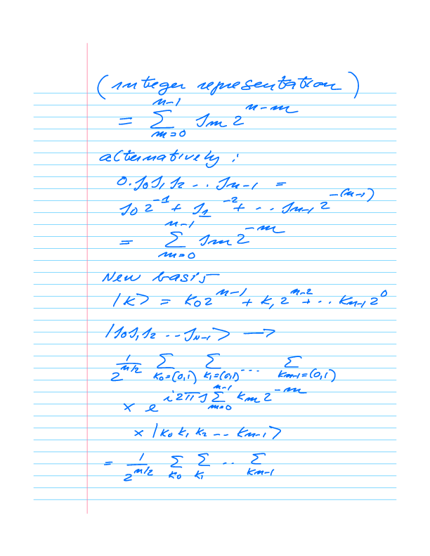
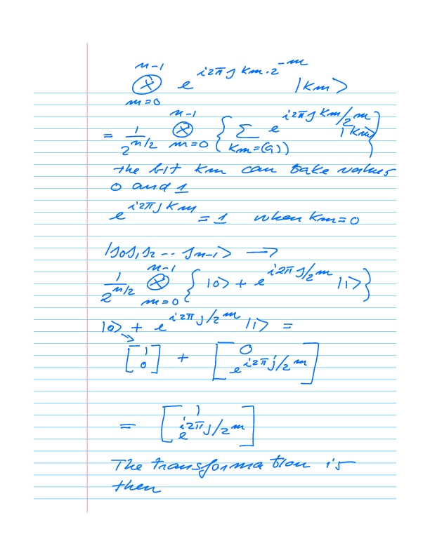
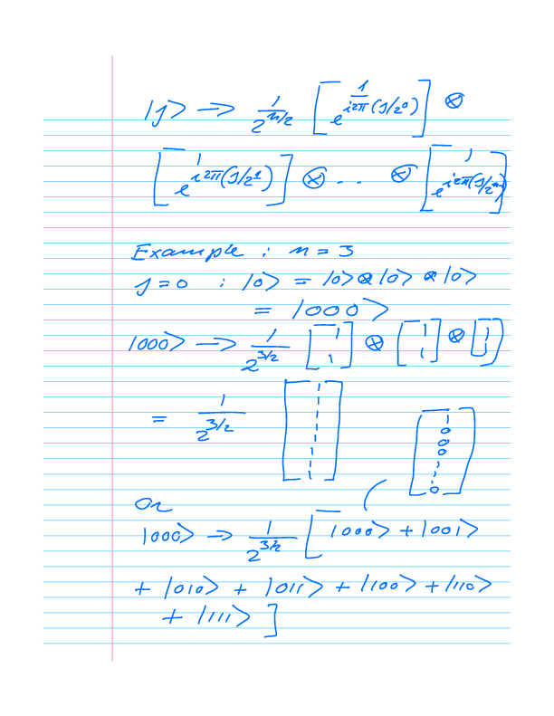
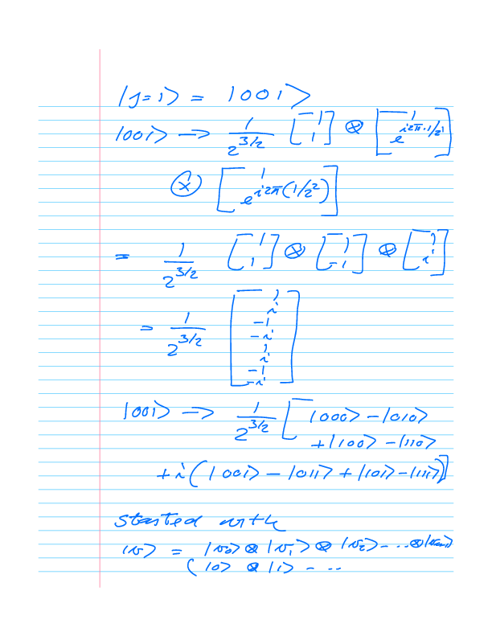
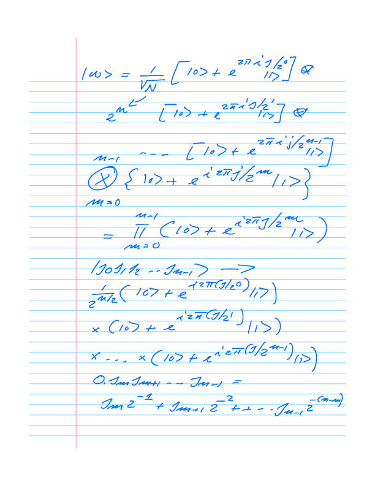
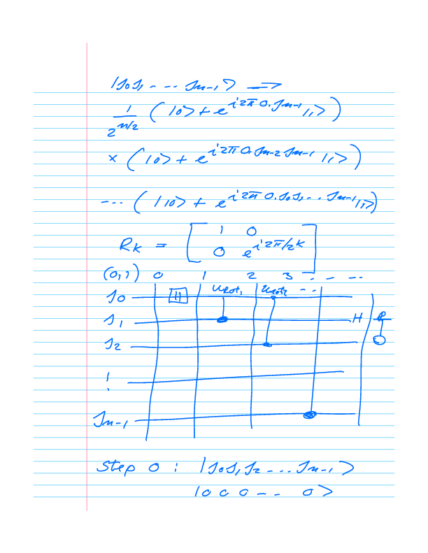
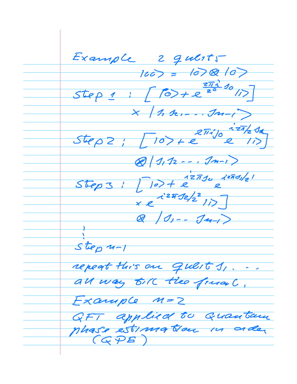
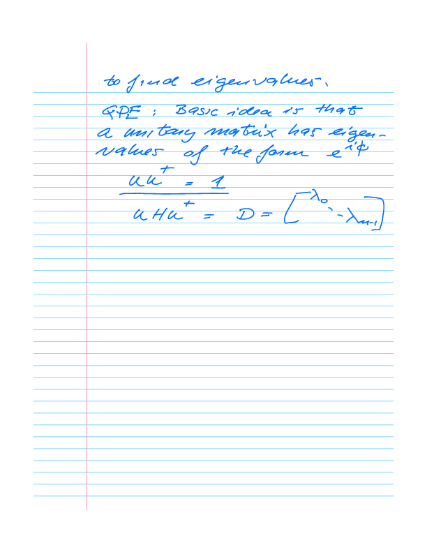
Plans for the week of May 15-19
- Quantum Phase Estimation algorithm
- Summary of course and discussions of the project and final oral exam
© 1999-2023, Morten Hjorth-Jensen. Released under CC Attribution-NonCommercial 4.0 license